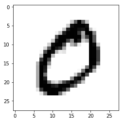
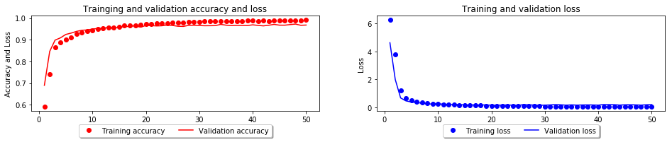
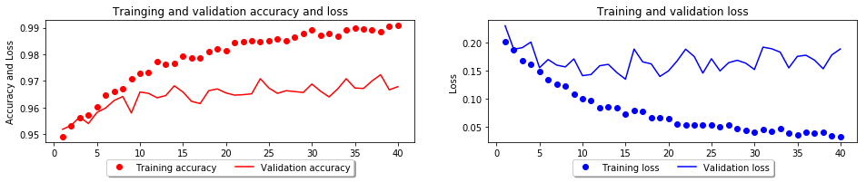
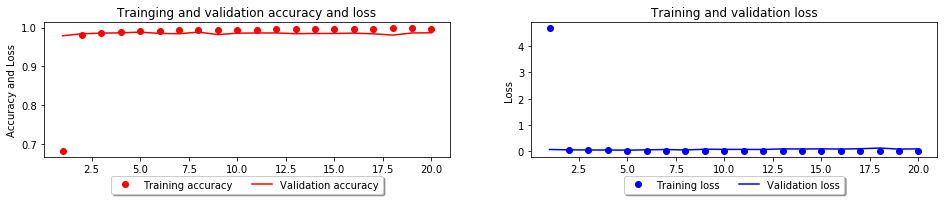
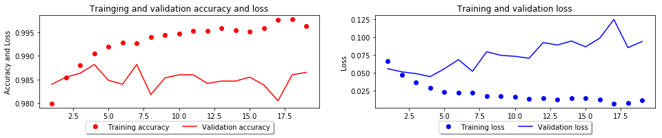
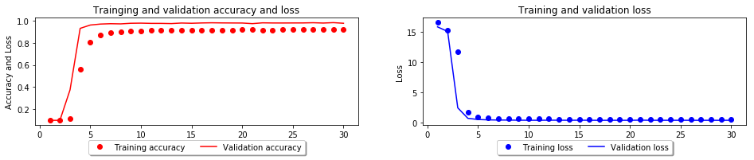
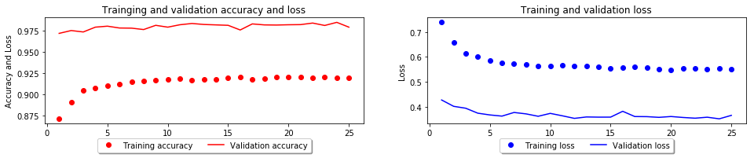

<!DOCTYPE html>
<html>
<head><meta name="generator" content="Hexo 3.8.0">
  <meta charset="utf-8">
  
  <title>딥러닝으로 손글씨를 인식하는 모델을 만들어보자. | CodingCrew</title>
  <meta name="viewport" content="width=device-width, initial-scale=1, maximum-scale=1">
  
  <meta name="keywords" content="MLKeras딥러닝으로 시리즈CNN">
  
  
    <meta name="google-site-verification" content="2YVImY1fo1thQTx-sHmMQhhE7x9aoPG7F593q2qt734">
  
  
  
  
    <meta name="naver-site-verification" content="6e851ae0213de51257ab8801ac88ee25b5581313">
  
  <meta name="description" content="Mnist 데이터셋을 이용한 손글씨 분류하기 : DNN, CNN지금까지 진행한 포스팅을 기반으로 딥러닝 튜토리얼 시 가장 흔하게 접할 수 있는 손글씨 분류하기를 해보겠습니다.MNIST 문제는 다중 분류 문제로써 0~9까지의 손글씨를 분류하는 문제입니다.이전 포스팅에서 사용한 선형 레이어를 이용하여 0~9의 숫자를 분류해보고, 이후에는 CNN을 이용해 정확도">
<meta name="keywords" content="ML,Keras,딥러닝으로 시리즈,CNN">
<meta property="og:type" content="article">
<meta property="og:title" content="딥러닝으로 손글씨를 인식하는 모델을 만들어보자.">
<meta property="og:url" content="https://codingcrews.github.io/2019/01/17/mnist/index.html">
<meta property="og:site_name" content="CodingCrew">
<meta property="og:description" content="Mnist 데이터셋을 이용한 손글씨 분류하기 : DNN, CNN지금까지 진행한 포스팅을 기반으로 딥러닝 튜토리얼 시 가장 흔하게 접할 수 있는 손글씨 분류하기를 해보겠습니다.MNIST 문제는 다중 분류 문제로써 0~9까지의 손글씨를 분류하는 문제입니다.이전 포스팅에서 사용한 선형 레이어를 이용하여 0~9의 숫자를 분류해보고, 이후에는 CNN을 이용해 정확도">
<meta property="og:locale" content="ko">
<meta property="og:image" content="https://codingcrews.github.io/2019/01/17/mnist/mnist_9_1.png">
<meta property="og:image" content="https://codingcrews.github.io/2019/01/17/mnist/mnist_23_0.png">
<meta property="og:image" content="https://codingcrews.github.io/2019/01/17/mnist/mnist_25_0.png">
<meta property="og:image" content="https://codingcrews.github.io/2019/01/17/mnist/mnist_38_0.png">
<meta property="og:image" content="https://codingcrews.github.io/2019/01/17/mnist/mnist_40_0.png">
<meta property="og:image" content="https://codingcrews.github.io/2019/01/17/mnist/mnist_51_0.png">
<meta property="og:image" content="https://codingcrews.github.io/2019/01/17/mnist/mnist_53_0.png">
<meta property="og:updated_time" content="2019-01-29T18:36:55.501Z">
<meta name="twitter:card" content="summary">
<meta name="twitter:title" content="딥러닝으로 손글씨를 인식하는 모델을 만들어보자.">
<meta name="twitter:description" content="Mnist 데이터셋을 이용한 손글씨 분류하기 : DNN, CNN지금까지 진행한 포스팅을 기반으로 딥러닝 튜토리얼 시 가장 흔하게 접할 수 있는 손글씨 분류하기를 해보겠습니다.MNIST 문제는 다중 분류 문제로써 0~9까지의 손글씨를 분류하는 문제입니다.이전 포스팅에서 사용한 선형 레이어를 이용하여 0~9의 숫자를 분류해보고, 이후에는 CNN을 이용해 정확도">
<meta name="twitter:image" content="https://codingcrews.github.io/2019/01/17/mnist/mnist_9_1.png">
  
    <link rel="alternate" href="/atom.xml" title="CodingCrew" type="application/atom+xml">
  

  

  <link rel="icon" href="/css/images/logo.png">
  <link rel="apple-touch-icon" href="/css/images/logo.png">
  
    <link href="//fonts.googleapis.com/css?family=Source+Code+Pro" rel="stylesheet" type="text/css">
  
  <link href="https://fonts.googleapis.com/css?family=Open+Sans|Montserrat:700" rel="stylesheet" type="text/css">
  <link href="https://fonts.googleapis.com/css?family=Roboto:400,300,300italic,400italic" rel="stylesheet" type="text/css">
  <link href="//cdn.bootcss.com/font-awesome/4.6.3/css/font-awesome.min.css" rel="stylesheet">
  <style type="text/css">
    @font-face{font-family:futura-pt;src:url(https://use.typekit.net/af/9749f0/00000000000000000001008f/27/l?subset_id=2&fvd=n5) format("woff2");font-weight:500;font-style:normal;}
    @font-face{font-family:futura-pt;src:url(https://use.typekit.net/af/90cf9f/000000000000000000010091/27/l?subset_id=2&fvd=n7) format("woff2");font-weight:500;font-style:normal;}
    @font-face{font-family:futura-pt;src:url(https://use.typekit.net/af/8a5494/000000000000000000013365/27/l?subset_id=2&fvd=n4) format("woff2");font-weight:lighter;font-style:normal;}
    @font-face{font-family:futura-pt;src:url(https://use.typekit.net/af/d337d8/000000000000000000010095/27/l?subset_id=2&fvd=i4) format("woff2");font-weight:400;font-style:italic;}</style>
  <link rel="stylesheet" href="/css/style.css">

  <script src="/js/jquery-3.1.1.min.js"></script>
  <script src="/js/bootstrap.js"></script>

  <!-- Bootstrap core CSS -->
  <link rel="stylesheet" href="/css/bootstrap.css">

  
    <link rel="stylesheet" href="/css/dialog.css">
  

  

  
    <link rel="stylesheet" href="/css/header-post.css">
  

  

  

</head>
</html>


  <body data-spy="scroll" data-target="#toc" data-offset="50">


  
  <div id="container">
    <div id="wrap">
      
        <header>

    <div id="allheader" class="navbar navbar-default navbar-static-top" role="navigation">
        <div class="navbar-inner">
          
          <div class="container"> 
            <button type="button" class="navbar-toggle" data-toggle="collapse" data-target=".navbar-collapse">
              <span class="sr-only">Toggle navigation</span>
              <span class="icon-bar"></span>
              <span class="icon-bar"></span>
              <span class="icon-bar"></span>
            </button>

            
              <a class="brand" style="
                 margin-top: 0px;" href="#" data-toggle="modal" data-target="#myModal">
                  
              </a>
            
            
            <div class="navbar-collapse collapse">
              <ul class="hnav navbar-nav">
                
                  <li> <a class="main-nav-link" href="/">Home</a> </li>
                
                  <li> <a class="main-nav-link" href="/archives">Archives</a> </li>
                
                  <li> <a class="main-nav-link" href="/categories">Categories</a> </li>
                
                  <li> <a class="main-nav-link" href="/tags">Tags</a> </li>
                
                  <li> <a class="main-nav-link" href="/about">About</a> </li>
                
                  <li><div id="search-form-wrap">

    <form class="search-form">
        <input type="text" class="ins-search-input search-form-input" placeholder="">
        <button type="submit" class="search-form-submit"></button>
    </form>
    <div class="ins-search">
    <div class="ins-search-mask"></div>
    <div class="ins-search-container">
        <div class="ins-input-wrapper">
            <input type="text" class="ins-search-input" placeholder="Type something...">
            <span class="ins-close ins-selectable"><i class="fa fa-times-circle"></i></span>
        </div>
        <div class="ins-section-wrapper">
            <div class="ins-section-container"></div>
        </div>
    </div>
</div>
<script>
(function (window) {
    var INSIGHT_CONFIG = {
        TRANSLATION: {
            POSTS: 'Posts',
            PAGES: 'Pages',
            CATEGORIES: 'Categories',
            TAGS: 'Tags',
            UNTITLED: '(Untitled)',
        },
        ROOT_URL: '/',
        CONTENT_URL: '/content.json',
    };
    window.INSIGHT_CONFIG = INSIGHT_CONFIG;
})(window);
</script>
<script src="/js/insight.js"></script>

</div></li>
            </ul></div>
          </div>
                
      </div>
    </div>

</header>


      
            
      <div id="content" class="outer">
        
          <section id="main" style="float:none;"><article id="post-mnist" style="width: 75%; float:left;" class="article article-type-post" itemscope="" itemprop="blogPost">
  <div id="articleInner" class="article-inner">
    
    
      <header class="article-header">
        
  
    <h1 class="thumb" itemprop="name">
      딥러닝으로 손글씨를 인식하는 모델을 만들어보자.
    </h1>
  

      </header>
    
    <div class="article-meta">
      
	<a href="/2019/01/17/mnist/" class="article-date">
	  <time datetime="2019-01-17T09:52:53.000Z" itemprop="datePublished">2019-01-17</time>
	</a>

      
    <a class="article-category-link" href="/categories/ml/">ML</a>

      
	<a class="article-views">
	<span id="busuanzi_container_page_pv">
		PV:<span id="busuanzi_value_page_pv"></span>
	</span>
	</a>

      

    </div>
    <div class="article-entry" itemprop="articleBody">
      
        <h1 id="Mnist-데이터셋을-이용한-손글씨-분류하기-DNN-CNN"><a href="#Mnist-데이터셋을-이용한-손글씨-분류하기-DNN-CNN" class="headerlink" title="Mnist 데이터셋을 이용한 손글씨 분류하기 : DNN, CNN"></a>Mnist 데이터셋을 이용한 손글씨 분류하기 : DNN, CNN</h1><p>지금까지 진행한 포스팅을 기반으로 딥러닝 튜토리얼 시 가장 흔하게 접할 수 있는 손글씨 분류하기를 해보겠습니다.<br>MNIST 문제는 다중 분류 문제로써 0~9까지의 손글씨를 분류하는 문제입니다.<br>이전 포스팅에서 사용한 선형 레이어를 이용하여 0~9의 숫자를 분류해보고, 이후에는 CNN을 이용해 정확도를 개선해보도록 하겠습니다.  </p>
<h1 id="Dataset"><a href="#Dataset" class="headerlink" title="Dataset"></a>Dataset</h1><p>사용할 MNIST 데이터 세트는 텐서플로 패키지에서 다운로드까지 진행해주는 코드를 포함시켜두었습니다.<br>우리가 사용할 데이터셋은 텐서플로 패키지에서 제공하는 데이터셋을 이용할건데요.<br>다른곳에서 MNIST 데이터셋을 이용하여 진행해봐도 무방합니다.  </p>
<p>우리가 사용할 MNIST 데이터는 손글씨 데이터로써 흑백 Gray Scale로 된 데이터셋을 말합니다.<br>28x28 사이즈의 단일 색상채널을 가지고 있으며, 트레이닝셋과 테스트셋이 각각 60,000개와 10,000개로 구성되어 있습니다.  </p>
<h2 id="Download"><a href="#Download" class="headerlink" title="Download"></a>Download</h2><figure class="highlight python"><table><tr><td class="gutter"><pre><span class="line">1</span><br><span class="line">2</span><br><span class="line">3</span><br><span class="line">4</span><br></pre></td><td class="code"><pre><span class="line"><span class="keyword">import</span> tensorflow <span class="keyword">as</span> tf</span><br><span class="line"><span class="keyword">import</span> numpy <span class="keyword">as</span> np</span><br><span class="line">mnist = tf.keras.datasets.mnist</span><br><span class="line">(x_train, y_train),(x_test, y_test) = mnist.load_data()</span><br></pre></td></tr></table></figure>
<h2 id="데이터-확인"><a href="#데이터-확인" class="headerlink" title="데이터 확인"></a>데이터 확인</h2><figure class="highlight python"><table><tr><td class="gutter"><pre><span class="line">1</span><br><span class="line">2</span><br><span class="line">3</span><br><span class="line">4</span><br><span class="line">5</span><br><span class="line">6</span><br></pre></td><td class="code"><pre><span class="line">display(x_train.shape)</span><br><span class="line">display(y_train.shape)</span><br><span class="line">display(x_test.shape)</span><br><span class="line">display(y_test.shape)</span><br><span class="line"></span><br><span class="line">display(y_test)</span><br></pre></td></tr></table></figure>
<pre><code>(60000, 28, 28)


(60000,)


(10000, 28, 28)


(10000,)


array([7, 2, 1, ..., 4, 5, 6], dtype=uint8)
</code></pre><p>데이터는 60,000개의 트레이닝셋과 10,000개의 테스트셋을 확인할 수 있고,<br>테스트 데이터는 28x28 사이즈의 이미지 데이터임을 확인할 수 있습니다. (색상 채널은 단일 채널이라 따로 표기되지 않아요.)<br>레이블 데이터는 0~9까지의 10개 클래스로 구성되어 있습니다.</p>
<h3 id="데이터-시각화"><a href="#데이터-시각화" class="headerlink" title="데이터 시각화"></a>데이터 시각화</h3><p>우리가 다룰 Mnist 데이터는 이미지 데이터 기반입니다.<br>해당 이미지를 시각화하여 확인해보겠습니다.</p>
<figure class="highlight python"><table><tr><td class="gutter"><pre><span class="line">1</span><br><span class="line">2</span><br><span class="line">3</span><br><span class="line">4</span><br><span class="line">5</span><br><span class="line">6</span><br><span class="line">7</span><br><span class="line">8</span><br><span class="line">9</span><br><span class="line">10</span><br></pre></td><td class="code"><pre><span class="line"><span class="keyword">import</span> matplotlib.pyplot <span class="keyword">as</span> plt</span><br><span class="line"></span><br><span class="line"><span class="function"><span class="keyword">def</span> <span class="title">show_data</span><span class="params">(arr)</span>:</span></span><br><span class="line">    plt.imshow(arr, cmap=plt.cm.binary)</span><br><span class="line">    </span><br><span class="line">    reshape_data = arr.reshape(<span class="number">-1</span>, )</span><br><span class="line">    <span class="keyword">for</span> index, data <span class="keyword">in</span> enumerate(reshape_data):</span><br><span class="line">        print(<span class="string">'&#123;:3d&#125;'</span>.format(data), end=<span class="string">''</span>)</span><br><span class="line">        <span class="keyword">if</span> index % <span class="number">28</span> == <span class="number">27</span>:</span><br><span class="line">            print()</span><br></pre></td></tr></table></figure>
<figure class="highlight python"><table><tr><td class="gutter"><pre><span class="line">1</span><br></pre></td><td class="code"><pre><span class="line">show_data(x_train[<span class="number">1</span>])</span><br></pre></td></tr></table></figure>
<pre><code>0  0  0  0  0  0  0  0  0  0  0  0  0  0  0  0  0  0  0  0  0  0  0  0  0  0  0  0
0  0  0  0  0  0  0  0  0  0  0  0  0  0  0  0  0  0  0  0  0  0  0  0  0  0  0  0
0  0  0  0  0  0  0  0  0  0  0  0  0  0  0  0  0  0  0  0  0  0  0  0  0  0  0  0
0  0  0  0  0  0  0  0  0  0  0  0  0  0  0  0  0  0  0  0  0  0  0  0  0  0  0  0
0  0  0  0  0  0  0  0  0  0  0  0  0  0  0 51159253159 50  0  0  0  0  0  0  0  0
0  0  0  0  0  0  0  0  0  0  0  0  0  0 48238252252252237  0  0  0  0  0  0  0  0
0  0  0  0  0  0  0  0  0  0  0  0  0 54227253252239233252 57  6  0  0  0  0  0  0
0  0  0  0  0  0  0  0  0  0  0 10 60224252253252202 84252253122  0  0  0  0  0  0
0  0  0  0  0  0  0  0  0  0  0163252252252253252252 96189253167  0  0  0  0  0  0
0  0  0  0  0  0  0  0  0  0 51238253253190114253228 47 79255168  0  0  0  0  0  0
0  0  0  0  0  0  0  0  0 48238252252179 12 75121 21  0  0253243 50  0  0  0  0  0
0  0  0  0  0  0  0  0 38165253233208 84  0  0  0  0  0  0253252165  0  0  0  0  0
0  0  0  0  0  0  0  7178252240 71 19 28  0  0  0  0  0  0253252195  0  0  0  0  0
0  0  0  0  0  0  0 57252252 63  0  0  0  0  0  0  0  0  0253252195  0  0  0  0  0
0  0  0  0  0  0  0198253190  0  0  0  0  0  0  0  0  0  0255253196  0  0  0  0  0
0  0  0  0  0  0 76246252112  0  0  0  0  0  0  0  0  0  0253252148  0  0  0  0  0
0  0  0  0  0  0 85252230 25  0  0  0  0  0  0  0  0  7135253186 12  0  0  0  0  0
0  0  0  0  0  0 85252223  0  0  0  0  0  0  0  0  7131252225 71  0  0  0  0  0  0
0  0  0  0  0  0 85252145  0  0  0  0  0  0  0 48165252173  0  0  0  0  0  0  0  0
0  0  0  0  0  0 86253225  0  0  0  0  0  0114238253162  0  0  0  0  0  0  0  0  0
0  0  0  0  0  0 85252249146 48 29 85178225253223167 56  0  0  0  0  0  0  0  0  0
0  0  0  0  0  0 85252252252229215252252252196130  0  0  0  0  0  0  0  0  0  0  0
0  0  0  0  0  0 28199252252253252252233145  0  0  0  0  0  0  0  0  0  0  0  0  0
0  0  0  0  0  0  0 25128252253252141 37  0  0  0  0  0  0  0  0  0  0  0  0  0  0
0  0  0  0  0  0  0  0  0  0  0  0  0  0  0  0  0  0  0  0  0  0  0  0  0  0  0  0
0  0  0  0  0  0  0  0  0  0  0  0  0  0  0  0  0  0  0  0  0  0  0  0  0  0  0  0
0  0  0  0  0  0  0  0  0  0  0  0  0  0  0  0  0  0  0  0  0  0  0  0  0  0  0  0
0  0  0  0  0  0  0  0  0  0  0  0  0  0  0  0  0  0  0  0  0  0  0  0  0  0  0  0
</code></pre><p></p>
<p>위는 해당 데이터를 시각화 한 결과입니다.<br>28x28의 데이터는 각 픽셀별로 해당 픽셀이 표시해야 할 색상값을 표시하는데,<br>이걸 28x28 사이즈에 맞춰 해당 데이터를 출력한 결과입니다.  </p>
<p>이미지는 matplotlib을 이용하여 해당 데이터를 시각화 한 결과입니다.</p>
<h2 id="데이터-변환"><a href="#데이터-변환" class="headerlink" title="데이터 변환"></a>데이터 변환</h2><p>이미지 데이터를 확인했을 때 0~255까지의 값을 가지고 있는걸 확인할 수 있습니다.<br>이걸 모델에 효율적으로 학습시키기 위해선 0~1 사이의 값으로 일반화(Nomalization)시키는 과정을 거쳐야 합니다.<br>그 이외에도 2D컨볼루셔널 레이어를 사용하기 위해선 채널에 대한 값도 명시되어 있어야하기 때문에<br>(넓이, 높이)의 형태를 가진 데이터를 (넓이,높이,채널)의 형태로 변환시켜보겠습니다.<br>구조는 어떤식으로든 상관없으며 (채널, 넓이, 높이) 순으로 정렬을 시켜도 됩니다.</p>
<figure class="highlight python"><table><tr><td class="gutter"><pre><span class="line">1</span><br><span class="line">2</span><br></pre></td><td class="code"><pre><span class="line">reshape_x_train = x_train.reshape(x_train.shape[<span class="number">0</span>], <span class="number">28</span>, <span class="number">28</span>, <span class="number">1</span>)</span><br><span class="line">reshape_x_test = x_test.reshape(x_test.shape[<span class="number">0</span>], <span class="number">28</span>, <span class="number">28</span>, <span class="number">1</span>)</span><br></pre></td></tr></table></figure>
<h1 id="모델-구성"><a href="#모델-구성" class="headerlink" title="모델 구성"></a>모델 구성</h1><p>이전 포스팅에서 다뤘던 Dense 레이어를 이용해 기본적인 신경망으로 학습을 진행해봅시다.</p>
<figure class="highlight python"><table><tr><td class="gutter"><pre><span class="line">1</span><br><span class="line">2</span><br><span class="line">3</span><br><span class="line">4</span><br><span class="line">5</span><br><span class="line">6</span><br><span class="line">7</span><br><span class="line">8</span><br><span class="line">9</span><br><span class="line">10</span><br><span class="line">11</span><br></pre></td><td class="code"><pre><span class="line"><span class="keyword">from</span> tensorflow.keras.models <span class="keyword">import</span> Sequential</span><br><span class="line"><span class="keyword">from</span> tensorflow.keras <span class="keyword">import</span> layers</span><br><span class="line"></span><br><span class="line">model = Sequential()</span><br><span class="line">model.add(layers.InputLayer(input_shape=(<span class="number">28</span>, <span class="number">28</span>, <span class="number">1</span>)))</span><br><span class="line">model.add(layers.Flatten())</span><br><span class="line">model.add(layers.Dense(<span class="number">64</span>, activation=<span class="string">'relu'</span>))</span><br><span class="line">model.add(layers.Dense(<span class="number">16</span>, activation=<span class="string">'relu'</span>))</span><br><span class="line">model.add(layers.Dense(<span class="number">10</span>, activation=<span class="string">'softmax'</span>))</span><br><span class="line"></span><br><span class="line">model.summary()</span><br></pre></td></tr></table></figure>
<pre><code>_________________________________________________________________
Layer (type)                 Output Shape              Param #   
=================================================================
flatten (Flatten)            (None, 784)               0         
_________________________________________________________________
dense (Dense)                (None, 64)                50240     
_________________________________________________________________
dense_1 (Dense)              (None, 16)                1040      
_________________________________________________________________
dense_2 (Dense)              (None, 10)                170       
=================================================================
Total params: 51,450
Trainable params: 51,450
Non-trainable params: 0
_________________________________________________________________
</code></pre><p>총 3개의 레이어로 구성되어 있으며, MNIST 데이터셋에 맞춰 (28, 28, 1)의 형태에 맞춰 인풋 데이터를 받도록 구성했습니다.<br>마지막층은 손글씨 데이터의 10개 클래스(0~9까지의 레이블)를 예측하기 위해 출력을 10으로, 활성함수는 softmax를 사용합니다.  </p>
<h2 id="모델-컴파일"><a href="#모델-컴파일" class="headerlink" title="모델 컴파일"></a>모델 컴파일</h2><figure class="highlight python"><table><tr><td class="gutter"><pre><span class="line">1</span><br><span class="line">2</span><br><span class="line">3</span><br><span class="line">4</span><br><span class="line">5</span><br></pre></td><td class="code"><pre><span class="line">model.compile(</span><br><span class="line">    optimizer=<span class="string">'adam'</span>,</span><br><span class="line">    loss=<span class="string">'sparse_categorical_crossentropy'</span>,</span><br><span class="line">    metrics=[<span class="string">'acc'</span>]</span><br><span class="line">)</span><br></pre></td></tr></table></figure>
<h2 id="모델-학습"><a href="#모델-학습" class="headerlink" title="모델 학습"></a>모델 학습</h2><p><del>CPU로 학습 시 대략 25분 정도의 시간이 소요됩니다. (맥북프로 15인치 2017 CTO 기준)<br>그래서 저는 GPU 환경을 세팅하고 학습을 진행했습니다.<br>GPU 환경을 구축하기 위한 데스크탑을 만들기 어려우신 분들은 <a href="/2019/01/15/deeplearning-gpu/">AWS로 GPU환경 세팅하기</a>포스팅을 참고하세요.</del></p>
<p>모델의 구성을 변경했습니다.<br>CPU에서도 에폭당 1초의 결과를 보여줍니다.  </p>
<figure class="highlight python"><table><tr><td class="gutter"><pre><span class="line">1</span><br><span class="line">2</span><br><span class="line">3</span><br><span class="line">4</span><br><span class="line">5</span><br><span class="line">6</span><br><span class="line">7</span><br></pre></td><td class="code"><pre><span class="line">history = model.fit(</span><br><span class="line">    reshape_x_train,</span><br><span class="line">    y_train,</span><br><span class="line">    batch_size=<span class="number">128</span>,</span><br><span class="line">    epochs=<span class="number">50</span>,</span><br><span class="line">    validation_split=<span class="number">.1</span>,</span><br><span class="line">)</span><br></pre></td></tr></table></figure>
<pre><code>Train on 54000 samples, validate on 6000 samples
Epoch 1/50
54000/54000 [==============================] - 1s 20us/step - loss: 6.2426 - acc: 0.5904 - val_loss: 4.6204 - val_acc: 0.6893
Epoch 2/50
54000/54000 [==============================] - 1s 14us/step - loss: 3.7938 - acc: 0.7398 - val_loss: 1.9817 - val_acc: 0.8462
Epoch 3/50
54000/54000 [==============================] - 1s 15us/step - loss: 1.2180 - acc: 0.8636 - val_loss: 0.6667 - val_acc: 0.8982
Epoch 4/50
54000/54000 [==============================] - 1s 12us/step - loss: 0.6308 - acc: 0.8874 - val_loss: 0.4537 - val_acc: 0.9087
Epoch 5/50
54000/54000 [==============================] - 1s 12us/step - loss: 0.4778 - acc: 0.9019 - val_loss: 0.3766 - val_acc: 0.9243
Epoch 6/50
54000/54000 [==============================] - 1s 13us/step - loss: 0.3996 - acc: 0.9122 - val_loss: 0.3421 - val_acc: 0.9307
Epoch 7/50
54000/54000 [==============================] - 1s 13us/step - loss: 0.3400 - acc: 0.9253 - val_loss: 0.2921 - val_acc: 0.9385
Epoch 8/50
54000/54000 [==============================] - 1s 13us/step - loss: 0.2954 - acc: 0.9321 - val_loss: 0.2361 - val_acc: 0.9437
Epoch 9/50
54000/54000 [==============================] - 1s 13us/step - loss: 0.2549 - acc: 0.9403 - val_loss: 0.2291 - val_acc: 0.9452
Epoch 10/50
54000/54000 [==============================] - 1s 13us/step - loss: 0.2292 - acc: 0.9447 - val_loss: 0.2212 - val_acc: 0.9495
Epoch 11/50
54000/54000 [==============================] - 1s 13us/step - loss: 0.2008 - acc: 0.9490 - val_loss: 0.2298 - val_acc: 0.9518
Epoch 12/50
54000/54000 [==============================] - 1s 13us/step - loss: 0.1871 - acc: 0.9531 - val_loss: 0.1879 - val_acc: 0.9533
Epoch 13/50
54000/54000 [==============================] - 1s 12us/step - loss: 0.1681 - acc: 0.9563 - val_loss: 0.1907 - val_acc: 0.9565
Epoch 14/50
54000/54000 [==============================] - 1s 14us/step - loss: 0.1610 - acc: 0.9572 - val_loss: 0.2007 - val_acc: 0.9540
Epoch 15/50
54000/54000 [==============================] - 1s 12us/step - loss: 0.1477 - acc: 0.9603 - val_loss: 0.1550 - val_acc: 0.9582
Epoch 16/50
54000/54000 [==============================] - 1s 12us/step - loss: 0.1330 - acc: 0.9646 - val_loss: 0.1695 - val_acc: 0.9598
Epoch 17/50
54000/54000 [==============================] - 1s 12us/step - loss: 0.1262 - acc: 0.9661 - val_loss: 0.1596 - val_acc: 0.9627
Epoch 18/50
54000/54000 [==============================] - 1s 13us/step - loss: 0.1226 - acc: 0.9669 - val_loss: 0.1563 - val_acc: 0.9642
Epoch 19/50
54000/54000 [==============================] - 1s 12us/step - loss: 0.1081 - acc: 0.9708 - val_loss: 0.1706 - val_acc: 0.9580
Epoch 20/50
54000/54000 [==============================] - 1s 13us/step - loss: 0.0998 - acc: 0.9729 - val_loss: 0.1407 - val_acc: 0.9658
Epoch 21/50
54000/54000 [==============================] - 1s 14us/step - loss: 0.0970 - acc: 0.9733 - val_loss: 0.1428 - val_acc: 0.9653
Epoch 22/50
54000/54000 [==============================] - 1s 13us/step - loss: 0.0829 - acc: 0.9774 - val_loss: 0.1584 - val_acc: 0.9637
Epoch 23/50
54000/54000 [==============================] - 1s 15us/step - loss: 0.0851 - acc: 0.9763 - val_loss: 0.1609 - val_acc: 0.9645
Epoch 24/50
54000/54000 [==============================] - 1s 13us/step - loss: 0.0833 - acc: 0.9766 - val_loss: 0.1462 - val_acc: 0.9682
Epoch 25/50
54000/54000 [==============================] - 1s 13us/step - loss: 0.0730 - acc: 0.9794 - val_loss: 0.1344 - val_acc: 0.9658
Epoch 26/50
54000/54000 [==============================] - 1s 13us/step - loss: 0.0781 - acc: 0.9788 - val_loss: 0.1881 - val_acc: 0.9623
Epoch 27/50
54000/54000 [==============================] - 1s 14us/step - loss: 0.0766 - acc: 0.9786 - val_loss: 0.1654 - val_acc: 0.9615
Epoch 28/50
54000/54000 [==============================] - 1s 14us/step - loss: 0.0664 - acc: 0.9809 - val_loss: 0.1617 - val_acc: 0.9663
Epoch 29/50
54000/54000 [==============================] - 1s 13us/step - loss: 0.0661 - acc: 0.9819 - val_loss: 0.1393 - val_acc: 0.9670
Epoch 30/50
54000/54000 [==============================] - 1s 14us/step - loss: 0.0649 - acc: 0.9814 - val_loss: 0.1492 - val_acc: 0.9655
Epoch 31/50
54000/54000 [==============================] - 1s 13us/step - loss: 0.0552 - acc: 0.9842 - val_loss: 0.1669 - val_acc: 0.9647
Epoch 32/50
54000/54000 [==============================] - 1s 13us/step - loss: 0.0523 - acc: 0.9849 - val_loss: 0.1880 - val_acc: 0.9648
Epoch 33/50
54000/54000 [==============================] - 1s 13us/step - loss: 0.0534 - acc: 0.9852 - val_loss: 0.1748 - val_acc: 0.9652
Epoch 34/50
54000/54000 [==============================] - 1s 13us/step - loss: 0.0533 - acc: 0.9847 - val_loss: 0.1453 - val_acc: 0.9708
Epoch 35/50
54000/54000 [==============================] - 1s 13us/step - loss: 0.0528 - acc: 0.9850 - val_loss: 0.1709 - val_acc: 0.9673
Epoch 36/50
54000/54000 [==============================] - 1s 14us/step - loss: 0.0498 - acc: 0.9856 - val_loss: 0.1492 - val_acc: 0.9653
Epoch 37/50
54000/54000 [==============================] - 1s 14us/step - loss: 0.0523 - acc: 0.9850 - val_loss: 0.1639 - val_acc: 0.9663
Epoch 38/50
54000/54000 [==============================] - 1s 13us/step - loss: 0.0467 - acc: 0.9863 - val_loss: 0.1682 - val_acc: 0.9660
Epoch 39/50
54000/54000 [==============================] - 1s 13us/step - loss: 0.0430 - acc: 0.9876 - val_loss: 0.1630 - val_acc: 0.9657
Epoch 40/50
54000/54000 [==============================] - 1s 13us/step - loss: 0.0397 - acc: 0.9890 - val_loss: 0.1517 - val_acc: 0.9688
Epoch 41/50
54000/54000 [==============================] - 1s 14us/step - loss: 0.0450 - acc: 0.9871 - val_loss: 0.1916 - val_acc: 0.9662
Epoch 42/50
54000/54000 [==============================] - 1s 14us/step - loss: 0.0416 - acc: 0.9877 - val_loss: 0.1888 - val_acc: 0.9640
Epoch 43/50
54000/54000 [==============================] - 1s 14us/step - loss: 0.0457 - acc: 0.9867 - val_loss: 0.1827 - val_acc: 0.9670
Epoch 44/50
54000/54000 [==============================] - 1s 15us/step - loss: 0.0375 - acc: 0.9892 - val_loss: 0.1546 - val_acc: 0.9708
Epoch 45/50
54000/54000 [==============================] - 1s 14us/step - loss: 0.0357 - acc: 0.9897 - val_loss: 0.1752 - val_acc: 0.9673
Epoch 46/50
54000/54000 [==============================] - 1s 15us/step - loss: 0.0391 - acc: 0.9894 - val_loss: 0.1772 - val_acc: 0.9672
Epoch 47/50
54000/54000 [==============================] - 1s 15us/step - loss: 0.0386 - acc: 0.9893 - val_loss: 0.1684 - val_acc: 0.9700
Epoch 48/50
54000/54000 [==============================] - 1s 15us/step - loss: 0.0392 - acc: 0.9886 - val_loss: 0.1530 - val_acc: 0.9723
Epoch 49/50
54000/54000 [==============================] - 1s 14us/step - loss: 0.0336 - acc: 0.9905 - val_loss: 0.1777 - val_acc: 0.9667
Epoch 50/50
54000/54000 [==============================] - 1s 14us/step - loss: 0.0315 - acc: 0.9907 - val_loss: 0.1884 - val_acc: 0.9678
</code></pre><p><del>현재 저의 GPU는 GTX 750TI를 사용중입니다.<br>에폭당 8초정도의 시간을 보여주고 있네요.</del></p>
<p>CPU로도 빠른속도를 보일 수 있도록 모델을 변경했습니다.<br>변경된 모델로 학습에 약 1분정도 소요됩니다.  </p>
<h2 id="정확도-손실-시각화"><a href="#정확도-손실-시각화" class="headerlink" title="정확도, 손실 시각화"></a>정확도, 손실 시각화</h2><figure class="highlight python"><table><tr><td class="gutter"><pre><span class="line">1</span><br><span class="line">2</span><br><span class="line">3</span><br><span class="line">4</span><br><span class="line">5</span><br><span class="line">6</span><br><span class="line">7</span><br><span class="line">8</span><br><span class="line">9</span><br><span class="line">10</span><br><span class="line">11</span><br><span class="line">12</span><br><span class="line">13</span><br><span class="line">14</span><br><span class="line">15</span><br><span class="line">16</span><br><span class="line">17</span><br><span class="line">18</span><br><span class="line">19</span><br><span class="line">20</span><br><span class="line">21</span><br><span class="line">22</span><br><span class="line">23</span><br><span class="line">24</span><br><span class="line">25</span><br><span class="line">26</span><br><span class="line">27</span><br><span class="line">28</span><br><span class="line">29</span><br><span class="line">30</span><br><span class="line">31</span><br><span class="line">32</span><br><span class="line">33</span><br><span class="line">34</span><br><span class="line">35</span><br></pre></td><td class="code"><pre><span class="line"><span class="keyword">import</span> matplotlib.pyplot <span class="keyword">as</span> plt</span><br><span class="line"></span><br><span class="line"><span class="function"><span class="keyword">def</span> <span class="title">show_graph</span><span class="params">(history_dict)</span>:</span></span><br><span class="line">    accuracy = history_dict[<span class="string">'acc'</span>]</span><br><span class="line">    val_accuracy = history_dict[<span class="string">'val_acc'</span>]</span><br><span class="line">    loss = history_dict[<span class="string">'loss'</span>]</span><br><span class="line">    val_loss = history_dict[<span class="string">'val_loss'</span>]</span><br><span class="line"></span><br><span class="line">    epochs = range(<span class="number">1</span>, len(loss) + <span class="number">1</span>)</span><br><span class="line">    </span><br><span class="line">    plt.figure(figsize=(<span class="number">16</span>, <span class="number">1</span>))</span><br><span class="line">    </span><br><span class="line">    plt.subplot(<span class="number">121</span>)</span><br><span class="line">    plt.subplots_adjust(top=<span class="number">2</span>)</span><br><span class="line">    plt.plot(epochs, accuracy, <span class="string">'ro'</span>, label=<span class="string">'Training accuracy'</span>)</span><br><span class="line">    plt.plot(epochs, val_accuracy, <span class="string">'r'</span>, label=<span class="string">'Validation accuracy'</span>)</span><br><span class="line">    plt.title(<span class="string">'Trainging and validation accuracy and loss'</span>)</span><br><span class="line">    plt.xlabel(<span class="string">'Epochs'</span>)</span><br><span class="line">    plt.ylabel(<span class="string">'Accuracy and Loss'</span>)</span><br><span class="line"></span><br><span class="line">    plt.legend(loc=<span class="string">'upper center'</span>, bbox_to_anchor=(<span class="number">0.5</span>, <span class="number">-0.1</span>),</span><br><span class="line">              fancybox=<span class="keyword">True</span>, shadow=<span class="keyword">True</span>, ncol=<span class="number">5</span>)</span><br><span class="line"><span class="comment">#     plt.legend(bbox_to_anchor=(1, -0.1))</span></span><br><span class="line"></span><br><span class="line">    plt.subplot(<span class="number">122</span>)</span><br><span class="line">    plt.plot(epochs, loss, <span class="string">'bo'</span>, label=<span class="string">'Training loss'</span>)</span><br><span class="line">    plt.plot(epochs, val_loss, <span class="string">'b'</span>, label=<span class="string">'Validation loss'</span>)</span><br><span class="line">    plt.title(<span class="string">'Training and validation loss'</span>)</span><br><span class="line">    plt.xlabel(<span class="string">'Epochs'</span>)</span><br><span class="line">    plt.ylabel(<span class="string">'Loss'</span>)</span><br><span class="line">    plt.legend(loc=<span class="string">'upper center'</span>, bbox_to_anchor=(<span class="number">0.5</span>, <span class="number">-0.1</span>),</span><br><span class="line">          fancybox=<span class="keyword">True</span>, shadow=<span class="keyword">True</span>, ncol=<span class="number">5</span>)</span><br><span class="line"><span class="comment">#     plt.legend(bbox_to_anchor=(1, 0))</span></span><br><span class="line"></span><br><span class="line">    plt.show()</span><br></pre></td></tr></table></figure>
<figure class="highlight python"><table><tr><td class="gutter"><pre><span class="line">1</span><br></pre></td><td class="code"><pre><span class="line">show_graph(history.history)</span><br></pre></td></tr></table></figure>
<p></p>
<p>첫번째 에폭의 결과가 너무 편차가 심하여 그래프를 알아보기 힘드니 10번째 에폭의 결과부터 그래프로 그려보도록 하겠습니다.</p>
<figure class="highlight python"><table><tr><td class="gutter"><pre><span class="line">1</span><br><span class="line">2</span><br><span class="line">3</span><br></pre></td><td class="code"><pre><span class="line">m = map(<span class="keyword">lambda</span> x: (x[<span class="number">0</span>], x[<span class="number">1</span>][<span class="number">10</span>:]), history.history.items())</span><br><span class="line">not_noise_history = dict(list(m))</span><br><span class="line">show_graph(not_noise_history)</span><br></pre></td></tr></table></figure>
<p></p>
<p>대략 20 에폭부터 과대적합이 시작되는걸 확인할 수 있습니다.  </p>
<figure class="highlight python"><table><tr><td class="gutter"><pre><span class="line">1</span><br></pre></td><td class="code"><pre><span class="line">model.evaluate(reshape_x_test, y_test)</span><br></pre></td></tr></table></figure>
<pre><code>10000/10000 [==============================] - 0s 14us/step


[0.21370663271014564, 0.9631]
</code></pre><p>96%의 정확도를 보여주고 있습니다.<br>레이어를 더 깊고 넓게 구성을 하여 높은 정확도를 만들어보세요.  </p>
<h1 id="모델-구성-CNN"><a href="#모델-구성-CNN" class="headerlink" title="모델 구성 - CNN"></a>모델 구성 - CNN</h1><p>지금까지 포스팅한 간단한 DNN으로도 MNIST 데이터셋의 분류를 높은 정확도로 만들 수 있습니다.<br>하지만 CNN을 이용하면 적은 파라메터로 좀더 정확한 모델을 구성할 수 있습니다.<br>비전 인식에서 딥러닝이 크게 활약한 이유가 이런곳에 있습니다.<br>간단한 CNN 모델을 구성해보겠습니다.  </p>
<h2 id="네트워크-구성"><a href="#네트워크-구성" class="headerlink" title="네트워크 구성"></a>네트워크 구성</h2><p>Kernel Initializer로는 유명한 Xavier Initializer를 사용합니다.  </p>
<figure class="highlight python"><table><tr><td class="gutter"><pre><span class="line">1</span><br><span class="line">2</span><br><span class="line">3</span><br><span class="line">4</span><br><span class="line">5</span><br><span class="line">6</span><br><span class="line">7</span><br><span class="line">8</span><br><span class="line">9</span><br><span class="line">10</span><br><span class="line">11</span><br><span class="line">12</span><br><span class="line">13</span><br><span class="line">14</span><br><span class="line">15</span><br><span class="line">16</span><br><span class="line">17</span><br><span class="line">18</span><br><span class="line">19</span><br><span class="line">20</span><br><span class="line">21</span><br><span class="line">22</span><br><span class="line">23</span><br><span class="line">24</span><br><span class="line">25</span><br></pre></td><td class="code"><pre><span class="line">model = Sequential()</span><br><span class="line"><span class="comment"># model.add(layers.InputLayer())</span></span><br><span class="line">model.add(layers.Conv2D(</span><br><span class="line">    input_shape=(<span class="number">28</span>, <span class="number">28</span>, <span class="number">1</span>),</span><br><span class="line">    filters=<span class="number">64</span>, </span><br><span class="line">    kernel_size=(<span class="number">2</span>, <span class="number">2</span>), </span><br><span class="line">    strides=(<span class="number">1</span>, <span class="number">1</span>), </span><br><span class="line">    padding=<span class="string">'same'</span>,</span><br><span class="line">    activation=<span class="string">'relu'</span>,</span><br><span class="line">    kernel_initializer=<span class="string">'glorot_normal'</span>,</span><br><span class="line">))</span><br><span class="line">model.add(layers.MaxPool2D())</span><br><span class="line">model.add(layers.Conv2D(</span><br><span class="line">    filters=<span class="number">128</span>, </span><br><span class="line">    kernel_size=(<span class="number">2</span>, <span class="number">2</span>), </span><br><span class="line">    strides=(<span class="number">1</span>, <span class="number">1</span>), </span><br><span class="line">    padding=<span class="string">'same'</span>,</span><br><span class="line">    activation=<span class="string">'relu'</span>,</span><br><span class="line">    kernel_initializer=<span class="string">'glorot_normal'</span></span><br><span class="line">))</span><br><span class="line">model.add(layers.MaxPool2D())</span><br><span class="line">model.add(layers.Flatten())</span><br><span class="line">model.add(layers.Dense(<span class="number">10</span>, activation=<span class="string">'softmax'</span>))</span><br><span class="line"></span><br><span class="line">model.summary()</span><br></pre></td></tr></table></figure>
<pre><code>_________________________________________________________________
Layer (type)                 Output Shape              Param #   
=================================================================
conv2d (Conv2D)              (None, 28, 28, 64)        320       
_________________________________________________________________
max_pooling2d (MaxPooling2D) (None, 14, 14, 64)        0         
_________________________________________________________________
conv2d_1 (Conv2D)            (None, 14, 14, 128)       32896     
_________________________________________________________________
max_pooling2d_1 (MaxPooling2 (None, 7, 7, 128)         0         
_________________________________________________________________
flatten_1 (Flatten)          (None, 6272)              0         
_________________________________________________________________
dense_3 (Dense)              (None, 10)                62730     
=================================================================
Total params: 95,946
Trainable params: 95,946
Non-trainable params: 0
_________________________________________________________________
</code></pre><h2 id="모델-컴파일-1"><a href="#모델-컴파일-1" class="headerlink" title="모델 컴파일"></a>모델 컴파일</h2><p>저희는 레이블 데이터를 원-핫 인코딩을 진행하지 않았기 때문에 Loss 펑션에 sparse_categorical_crossentropy를 지정합니다.</p>
<figure class="highlight python"><table><tr><td class="gutter"><pre><span class="line">1</span><br><span class="line">2</span><br><span class="line">3</span><br><span class="line">4</span><br><span class="line">5</span><br></pre></td><td class="code"><pre><span class="line">model.compile(</span><br><span class="line">    optimizer=<span class="string">'adam'</span>,</span><br><span class="line">    loss=<span class="string">'sparse_categorical_crossentropy'</span>,</span><br><span class="line">    metrics=[<span class="string">'acc'</span>]</span><br><span class="line">)</span><br></pre></td></tr></table></figure>
<h2 id="모델-학습-1"><a href="#모델-학습-1" class="headerlink" title="모델 학습"></a>모델 학습</h2><p>CPU로 돌리시는 경우 시간이 조금 걸릴 수 있으니 커피한잔 하고 오세요~  </p>
<figure class="highlight python"><table><tr><td class="gutter"><pre><span class="line">1</span><br><span class="line">2</span><br><span class="line">3</span><br><span class="line">4</span><br><span class="line">5</span><br><span class="line">6</span><br><span class="line">7</span><br></pre></td><td class="code"><pre><span class="line">history = model.fit(</span><br><span class="line">    reshape_x_train,</span><br><span class="line">    y_train,</span><br><span class="line">    batch_size=<span class="number">128</span>,</span><br><span class="line">    epochs=<span class="number">20</span>,</span><br><span class="line">    validation_split=<span class="number">.1</span>,</span><br><span class="line">)</span><br></pre></td></tr></table></figure>
<pre><code>Train on 54000 samples, validate on 6000 samples
Epoch 1/20
54000/54000 [==============================] - 15s 278us/step - loss: 4.6634 - acc: 0.6814 - val_loss: 0.0709 - val_acc: 0.9788
Epoch 2/20
54000/54000 [==============================] - 9s 160us/step - loss: 0.0665 - acc: 0.9799 - val_loss: 0.0560 - val_acc: 0.9840
Epoch 3/20
54000/54000 [==============================] - 9s 160us/step - loss: 0.0472 - acc: 0.9854 - val_loss: 0.0516 - val_acc: 0.985570 - acc: 0
Epoch 4/20
54000/54000 [==============================] - 9s 160us/step - loss: 0.0372 - acc: 0.9880 - val_loss: 0.0491 - val_acc: 0.9863 loss: 0.0353 - ac - ETA
Epoch 5/20
54000/54000 [==============================] - 9s 160us/step - loss: 0.0290 - acc: 0.9904 - val_loss: 0.0449 - val_acc: 0.9882
Epoch 6/20
54000/54000 [==============================] - 9s 160us/step - loss: 0.0235 - acc: 0.9919 - val_loss: 0.0557 - val_acc: 0.9848
Epoch 7/20
54000/54000 [==============================] - 9s 160us/step - loss: 0.0222 - acc: 0.9928 - val_loss: 0.0687 - val_acc: 0.9840
Epoch 8/20
54000/54000 [==============================] - 9s 160us/step - loss: 0.0228 - acc: 0.9926 - val_loss: 0.0524 - val_acc: 0.9882
Epoch 9/20
54000/54000 [==============================] - 9s 160us/step - loss: 0.0176 - acc: 0.9940 - val_loss: 0.0798 - val_acc: 0.9818
Epoch 10/20
54000/54000 [==============================] - 9s 161us/step - loss: 0.0171 - acc: 0.9943 - val_loss: 0.0748 - val_acc: 0.9853
Epoch 11/20
54000/54000 [==============================] - 9s 160us/step - loss: 0.0167 - acc: 0.9946 - val_loss: 0.0734 - val_acc: 0.9860
Epoch 12/20
54000/54000 [==============================] - 9s 161us/step - loss: 0.0136 - acc: 0.9953 - val_loss: 0.0706 - val_acc: 0.9860
Epoch 13/20
54000/54000 [==============================] - 9s 160us/step - loss: 0.0148 - acc: 0.9953 - val_loss: 0.0928 - val_acc: 0.9842
Epoch 14/20
54000/54000 [==============================] - 9s 161us/step - loss: 0.0130 - acc: 0.9958 - val_loss: 0.0892 - val_acc: 0.9847
Epoch 15/20
54000/54000 [==============================] - 9s 160us/step - loss: 0.0143 - acc: 0.9954 - val_loss: 0.0949 - val_acc: 0.9847
Epoch 16/20
54000/54000 [==============================] - 9s 160us/step - loss: 0.0141 - acc: 0.9952 - val_loss: 0.0868 - val_acc: 0.9855
Epoch 17/20
54000/54000 [==============================] - 9s 160us/step - loss: 0.0123 - acc: 0.9958 - val_loss: 0.0988 - val_acc: 0.9838
Epoch 18/20
54000/54000 [==============================] - 9s 160us/step - loss: 0.0067 - acc: 0.9976 - val_loss: 0.1250 - val_acc: 0.9805
Epoch 19/20
54000/54000 [==============================] - 9s 160us/step - loss: 0.0077 - acc: 0.9977 - val_loss: 0.0855 - val_acc: 0.9860
Epoch 20/20
54000/54000 [==============================] - 9s 160us/step - loss: 0.0117 - acc: 0.9963 - val_loss: 0.0942 - val_acc: 0.9865
</code></pre><p>제 노트북 CPU를 기준으로 모델을 학습하는데 에폭당 48초정도 걸리네요.<br>20 에폭을 돌렸으니 대략 16분 정도 걸릴거라 보시면 됩니다.  </p>
<p>저는 GPU를 사용하겠습니다.</p>
<h2 id="정확도-및-손실-시각화"><a href="#정확도-및-손실-시각화" class="headerlink" title="정확도 및 손실 시각화"></a>정확도 및 손실 시각화</h2><figure class="highlight python"><table><tr><td class="gutter"><pre><span class="line">1</span><br></pre></td><td class="code"><pre><span class="line">show_graph(history.history)</span><br></pre></td></tr></table></figure>
<p></p>
<p>첫 에폭의 결과 때문에 편차가 심하여 <strong>첫 에폭을 제외</strong>하고 보도록 하겠습니다.</p>
<figure class="highlight python"><table><tr><td class="gutter"><pre><span class="line">1</span><br><span class="line">2</span><br><span class="line">3</span><br></pre></td><td class="code"><pre><span class="line">m = map(<span class="keyword">lambda</span> x: (x[<span class="number">0</span>], x[<span class="number">1</span>][<span class="number">1</span>:]), history.history.items())</span><br><span class="line">not_noise_history = dict(list(m))</span><br><span class="line">show_graph(not_noise_history)</span><br></pre></td></tr></table></figure>
<p></p>
<p>검증세트의 손실을 보니 8번째 에폭부터 과대적합이 된 것 같군요.<br>과대적합을 해결할 수 있다면 정확도를 높일 수 있을까요 ?</p>
<h1 id="과대적합-해결"><a href="#과대적합-해결" class="headerlink" title="과대적합 해결"></a>과대적합 해결</h1><p>위와 같은 과대적합을 피하는 방법으로는 여러가지 방법이 있는데요.<br>L1, L2 규제와 같은 정규화를 이용하여 가중치를 감쇠(Weight Decay)시키는 방법과 드랍아웃, 모델의 하이퍼파라메터 튜닝 등으로 과대적합을 피하려 할 수 있습니다.  </p>
<h2 id="모델의-재구성"><a href="#모델의-재구성" class="headerlink" title="모델의 재구성"></a>모델의 재구성</h2><p>기존 모델은 2단의 컨볼루션 레이어와 풀링 레이어 사용했습니다.<br>모델이 정보를 더 가질 수 있도록 레이어를 더 구성시키고, 드랍아웃과 L2 규제를 걸어 더 복잡한 모델이지만 과대적합은 피할 수 있도록 재구성해보죠.</p>
<figure class="highlight python"><table><tr><td class="gutter"><pre><span class="line">1</span><br><span class="line">2</span><br><span class="line">3</span><br><span class="line">4</span><br><span class="line">5</span><br><span class="line">6</span><br><span class="line">7</span><br><span class="line">8</span><br><span class="line">9</span><br><span class="line">10</span><br><span class="line">11</span><br><span class="line">12</span><br><span class="line">13</span><br><span class="line">14</span><br><span class="line">15</span><br><span class="line">16</span><br><span class="line">17</span><br><span class="line">18</span><br><span class="line">19</span><br><span class="line">20</span><br><span class="line">21</span><br><span class="line">22</span><br><span class="line">23</span><br><span class="line">24</span><br><span class="line">25</span><br><span class="line">26</span><br><span class="line">27</span><br><span class="line">28</span><br><span class="line">29</span><br><span class="line">30</span><br><span class="line">31</span><br><span class="line">32</span><br><span class="line">33</span><br><span class="line">34</span><br><span class="line">35</span><br><span class="line">36</span><br><span class="line">37</span><br><span class="line">38</span><br><span class="line">39</span><br><span class="line">40</span><br><span class="line">41</span><br><span class="line">42</span><br><span class="line">43</span><br><span class="line">44</span><br><span class="line">45</span><br><span class="line">46</span><br><span class="line">47</span><br><span class="line">48</span><br><span class="line">49</span><br><span class="line">50</span><br><span class="line">51</span><br><span class="line">52</span><br><span class="line">53</span><br><span class="line">54</span><br><span class="line">55</span><br><span class="line">56</span><br><span class="line">57</span><br><span class="line">58</span><br></pre></td><td class="code"><pre><span class="line"><span class="keyword">from</span> tensorflow.keras.models <span class="keyword">import</span> Sequential</span><br><span class="line"><span class="keyword">from</span> tensorflow.keras <span class="keyword">import</span> layers</span><br><span class="line"><span class="keyword">from</span> tensorflow.keras <span class="keyword">import</span> regularizers</span><br><span class="line"></span><br><span class="line">model = Sequential()</span><br><span class="line">model.add(layers.Conv2D(</span><br><span class="line">    input_shape=(<span class="number">28</span>, <span class="number">28</span>, <span class="number">1</span>),</span><br><span class="line">    filters=<span class="number">32</span>, </span><br><span class="line">    kernel_size=(<span class="number">2</span>, <span class="number">2</span>), </span><br><span class="line">    strides=(<span class="number">1</span>, <span class="number">1</span>), </span><br><span class="line">    padding=<span class="string">'same'</span>,</span><br><span class="line">    activation=<span class="string">'relu'</span>,</span><br><span class="line">    kernel_initializer=<span class="string">'glorot_normal'</span>,</span><br><span class="line">    kernel_regularizer=regularizers.l2(<span class="number">0.01</span>),</span><br><span class="line">))</span><br><span class="line">model.add(layers.MaxPool2D())</span><br><span class="line">model.add(layers.Dropout(<span class="number">.5</span>))</span><br><span class="line"></span><br><span class="line">model.add(layers.Conv2D(</span><br><span class="line">    filters=<span class="number">64</span>, </span><br><span class="line">    kernel_size=(<span class="number">2</span>, <span class="number">2</span>), </span><br><span class="line">    strides=(<span class="number">1</span>, <span class="number">1</span>), </span><br><span class="line">    padding=<span class="string">'same'</span>,</span><br><span class="line">    activation=<span class="string">'relu'</span>,</span><br><span class="line">    kernel_initializer=<span class="string">'glorot_normal'</span>,</span><br><span class="line">    kernel_regularizer=regularizers.l2(<span class="number">0.01</span>),</span><br><span class="line">))</span><br><span class="line">model.add(layers.MaxPool2D())</span><br><span class="line">model.add(layers.Dropout(<span class="number">.5</span>))</span><br><span class="line"></span><br><span class="line">model.add(layers.Conv2D(</span><br><span class="line">    filters=<span class="number">128</span>, </span><br><span class="line">    kernel_size=(<span class="number">2</span>, <span class="number">2</span>), </span><br><span class="line">    strides=(<span class="number">1</span>, <span class="number">1</span>), </span><br><span class="line">    padding=<span class="string">'same'</span>,</span><br><span class="line">    activation=<span class="string">'relu'</span>,</span><br><span class="line">    kernel_initializer=<span class="string">'glorot_normal'</span>,</span><br><span class="line">    kernel_regularizer=regularizers.l2(<span class="number">0.01</span>),</span><br><span class="line">))</span><br><span class="line">model.add(layers.MaxPool2D())</span><br><span class="line">model.add(layers.Dropout(<span class="number">.5</span>))</span><br><span class="line"></span><br><span class="line">model.add(layers.Conv2D(</span><br><span class="line">    filters=<span class="number">256</span>, </span><br><span class="line">    kernel_size=(<span class="number">2</span>, <span class="number">2</span>), </span><br><span class="line">    strides=(<span class="number">1</span>, <span class="number">1</span>), </span><br><span class="line">    padding=<span class="string">'same'</span>,</span><br><span class="line">    activation=<span class="string">'relu'</span>,</span><br><span class="line">    kernel_initializer=<span class="string">'glorot_normal'</span>,</span><br><span class="line">    kernel_regularizer=regularizers.l2(<span class="number">0.01</span>),</span><br><span class="line">))</span><br><span class="line">model.add(layers.MaxPool2D())</span><br><span class="line">model.add(layers.Dropout(<span class="number">.5</span>))</span><br><span class="line"></span><br><span class="line">model.add(layers.Flatten())</span><br><span class="line">model.add(layers.Dense(<span class="number">10</span>, activation=<span class="string">'softmax'</span>, kernel_regularizer=regularizers.l2(<span class="number">0.01</span>),))</span><br><span class="line"></span><br><span class="line">model.summary()</span><br></pre></td></tr></table></figure>
<pre><code>_________________________________________________________________
Layer (type)                 Output Shape              Param #   
=================================================================
conv2d_2 (Conv2D)            (None, 28, 28, 32)        160       
_________________________________________________________________
max_pooling2d_2 (MaxPooling2 (None, 14, 14, 32)        0         
_________________________________________________________________
dropout (Dropout)            (None, 14, 14, 32)        0         
_________________________________________________________________
conv2d_3 (Conv2D)            (None, 14, 14, 64)        8256      
_________________________________________________________________
max_pooling2d_3 (MaxPooling2 (None, 7, 7, 64)          0         
_________________________________________________________________
dropout_1 (Dropout)          (None, 7, 7, 64)          0         
_________________________________________________________________
conv2d_4 (Conv2D)            (None, 7, 7, 128)         32896     
_________________________________________________________________
max_pooling2d_4 (MaxPooling2 (None, 3, 3, 128)         0         
_________________________________________________________________
dropout_2 (Dropout)          (None, 3, 3, 128)         0         
_________________________________________________________________
conv2d_5 (Conv2D)            (None, 3, 3, 256)         131328    
_________________________________________________________________
max_pooling2d_5 (MaxPooling2 (None, 1, 1, 256)         0         
_________________________________________________________________
dropout_3 (Dropout)          (None, 1, 1, 256)         0         
_________________________________________________________________
flatten_2 (Flatten)          (None, 256)               0         
_________________________________________________________________
dense_4 (Dense)              (None, 10)                2570      
=================================================================
Total params: 175,210
Trainable params: 175,210
Non-trainable params: 0
_________________________________________________________________
</code></pre><p>아까보다 두개의 레이어를 더 추가했고, 파라메터 수가 2배 가까이 늘어난게 보입니다.<br>중간중간 드랍아웃이 적용되었고, 레이어별로 L2 정규화를 추가했습니다.<br>이러한 정규화 기법을 추가하지 않고 학습을 했다면 이전보다 더 빠르게 과대적합이 일어나겠죠?<br>그럼 드랍아웃과 L2규제를 추가한 이후로 모델이 과대적합을 어떻게 견뎌내는지 확인해봅시다.</p>
<h2 id="모델-컴파일-2"><a href="#모델-컴파일-2" class="headerlink" title="모델 컴파일"></a>모델 컴파일</h2><figure class="highlight python"><table><tr><td class="gutter"><pre><span class="line">1</span><br><span class="line">2</span><br><span class="line">3</span><br><span class="line">4</span><br><span class="line">5</span><br></pre></td><td class="code"><pre><span class="line">model.compile(</span><br><span class="line">    optimizer=<span class="string">'adam'</span>,</span><br><span class="line">    loss=<span class="string">'sparse_categorical_crossentropy'</span>,</span><br><span class="line">    metrics=[<span class="string">'acc'</span>]</span><br><span class="line">)</span><br></pre></td></tr></table></figure>
<h2 id="학습-시작"><a href="#학습-시작" class="headerlink" title="학습 시작"></a>학습 시작</h2><p>Dropout과 Weight Decay를 추가함으로써 과대적합을 막았고, 뉴런의 학습에 제약을 두었으니, 학습이 더뎌질 수 밖에 없습니다.<br>충분히 학습할 수 있도록 에폭수를 조금 더 늘려 학습을 진행하도록 합니다.</p>
<figure class="highlight python"><table><tr><td class="gutter"><pre><span class="line">1</span><br><span class="line">2</span><br><span class="line">3</span><br><span class="line">4</span><br><span class="line">5</span><br><span class="line">6</span><br><span class="line">7</span><br></pre></td><td class="code"><pre><span class="line">history = model.fit(</span><br><span class="line">    reshape_x_train,</span><br><span class="line">    y_train,</span><br><span class="line">    batch_size=<span class="number">128</span>,</span><br><span class="line">    epochs=<span class="number">30</span>,</span><br><span class="line">    validation_split=<span class="number">.1</span>,</span><br><span class="line">)</span><br></pre></td></tr></table></figure>
<pre><code>Train on 54000 samples, validate on 6000 samples
Epoch 1/30
54000/54000 [==============================] - 11s 199us/step - loss: 16.5374 - acc: 0.0995 - val_loss: 15.8382 - val_acc: 0.0952
Epoch 2/30
54000/54000 [==============================] - 9s 166us/step - loss: 15.3383 - acc: 0.0990 - val_loss: 15.0753 - val_acc: 0.0952 -
Epoch 3/30
54000/54000 [==============================] - 9s 165us/step - loss: 11.6865 - acc: 0.1130 - val_loss: 2.4193 - val_acc: 0.3727
Epoch 4/30
54000/54000 [==============================] - 9s 165us/step - loss: 1.6351 - acc: 0.5584 - val_loss: 0.6810 - val_acc: 0.9327
Epoch 5/30
54000/54000 [==============================] - 9s 165us/step - loss: 0.9334 - acc: 0.8091 - val_loss: 0.4898 - val_acc: 0.9630 - acc
Epoch 6/30
54000/54000 [==============================] - 9s 164us/step - loss: 0.7393 - acc: 0.8710 - val_loss: 0.4268 - val_acc: 0.9718
Epoch 7/30
54000/54000 [==============================] - 9s 164us/step - loss: 0.6583 - acc: 0.8908 - val_loss: 0.4011 - val_acc: 0.9752
Epoch 8/30
54000/54000 [==============================] - 9s 164us/step - loss: 0.6127 - acc: 0.9045 - val_loss: 0.3935 - val_acc: 0.9735
Epoch 9/30
54000/54000 [==============================] - 9s 164us/step - loss: 0.6006 - acc: 0.9076 - val_loss: 0.3735 - val_acc: 0.9792: 0s - loss: 0.6030 -
Epoch 10/30
54000/54000 [==============================] - 9s 164us/step - loss: 0.5846 - acc: 0.9099 - val_loss: 0.3665 - val_acc: 0.9803
Epoch 11/30
54000/54000 [==============================] - 9s 164us/step - loss: 0.5774 - acc: 0.9119 - val_loss: 0.3618 - val_acc: 0.9782
Epoch 12/30
54000/54000 [==============================] - 9s 164us/step - loss: 0.5714 - acc: 0.9148 - val_loss: 0.3764 - val_acc: 0.9780
Epoch 13/30
54000/54000 [==============================] - 9s 164us/step - loss: 0.5682 - acc: 0.9154 - val_loss: 0.3707 - val_acc: 0.9763
Epoch 14/30
54000/54000 [==============================] - 9s 164us/step - loss: 0.5633 - acc: 0.9163 - val_loss: 0.3611 - val_acc: 0.9813
Epoch 15/30
54000/54000 [==============================] - 9s 164us/step - loss: 0.5628 - acc: 0.9177 - val_loss: 0.3728 - val_acc: 0.9792
Epoch 16/30
54000/54000 [==============================] - 9s 163us/step - loss: 0.5665 - acc: 0.9181 - val_loss: 0.3630 - val_acc: 0.9820
Epoch 17/30
54000/54000 [==============================] - 9s 163us/step - loss: 0.5650 - acc: 0.9168 - val_loss: 0.3526 - val_acc: 0.9835 - ETA: 3s - los
Epoch 18/30
54000/54000 [==============================] - 9s 163us/step - loss: 0.5632 - acc: 0.9172 - val_loss: 0.3584 - val_acc: 0.9823
Epoch 19/30
54000/54000 [==============================] - 9s 163us/step - loss: 0.5597 - acc: 0.9176 - val_loss: 0.3576 - val_acc: 0.9818
Epoch 20/30
54000/54000 [==============================] - 9s 163us/step - loss: 0.5548 - acc: 0.9193 - val_loss: 0.3577 - val_acc: 0.9813
Epoch 21/30
54000/54000 [==============================] - 9s 163us/step - loss: 0.5558 - acc: 0.9202 - val_loss: 0.3812 - val_acc: 0.9758
Epoch 22/30
54000/54000 [==============================] - 9s 163us/step - loss: 0.5601 - acc: 0.9179 - val_loss: 0.3601 - val_acc: 0.9830
Epoch 23/30
54000/54000 [==============================] - 9s 163us/step - loss: 0.5571 - acc: 0.9189 - val_loss: 0.3596 - val_acc: 0.9818
Epoch 24/30
54000/54000 [==============================] - 9s 164us/step - loss: 0.5495 - acc: 0.9200 - val_loss: 0.3568 - val_acc: 0.9817
Epoch 25/30
54000/54000 [==============================] - 9s 163us/step - loss: 0.5490 - acc: 0.9202 - val_loss: 0.3602 - val_acc: 0.9820
Epoch 26/30
54000/54000 [==============================] - 9s 163us/step - loss: 0.5529 - acc: 0.9205 - val_loss: 0.3563 - val_acc: 0.9822
Epoch 27/30
54000/54000 [==============================] - 9s 164us/step - loss: 0.5538 - acc: 0.9198 - val_loss: 0.3534 - val_acc: 0.9840
Epoch 28/30
54000/54000 [==============================] - 9s 163us/step - loss: 0.5492 - acc: 0.9204 - val_loss: 0.3573 - val_acc: 0.9812
Epoch 29/30
54000/54000 [==============================] - 9s 164us/step - loss: 0.5530 - acc: 0.9198 - val_loss: 0.3508 - val_acc: 0.9848
Epoch 30/30
54000/54000 [==============================] - 9s 163us/step - loss: 0.5521 - acc: 0.9198 - val_loss: 0.3648 - val_acc: 0.9792
</code></pre><h2 id="모델-평가"><a href="#모델-평가" class="headerlink" title="모델 평가"></a>모델 평가</h2><p>정규화 기법을 적용한 학습 결과가 어떻게 변했는지 확인 해봅시다.</p>
<figure class="highlight python"><table><tr><td class="gutter"><pre><span class="line">1</span><br></pre></td><td class="code"><pre><span class="line">show_graph(history.history)</span><br></pre></td></tr></table></figure>
<p></p>
<p>가중치의 급격환 변화를 L2 규제를 통해 막아두어 처음 2에폭까지는 큰 변화가 없다가 3~5 에폭이 지나서 모델이 높은 성능에 근접해지는걸 확인할 수 있습니다.<br>그럼 조금 더 자세하게 볼 수 있도록 첫 5에폭까지의 데이터는 제외하고 이후의 데이터를 그래프로 확인해보겠습니다.  </p>
<figure class="highlight python"><table><tr><td class="gutter"><pre><span class="line">1</span><br><span class="line">2</span><br><span class="line">3</span><br></pre></td><td class="code"><pre><span class="line">m = map(<span class="keyword">lambda</span> x: (x[<span class="number">0</span>], x[<span class="number">1</span>][<span class="number">5</span>:]), history.history.items())</span><br><span class="line">not_noise_history = dict(list(m))</span><br><span class="line">show_graph(not_noise_history)</span><br></pre></td></tr></table></figure>
<p></p>
<p>트레이닝 세트의 정확도가 낮게 측정되는건 드랍아웃 때문입니다.<br>학습마다 몇몇의 특정 뉴런을 비활성화 시키기 때문에 정확도가 낮아지게 됩니다.<br>훈련을 마친 이후 예측시에는 드랍아웃 시키는 뉴런의 수를 0%로 맞추고 사용합니다.<br>(모든 뉴런을 사용)</p>
<figure class="highlight python"><table><tr><td class="gutter"><pre><span class="line">1</span><br><span class="line">2</span><br><span class="line">3</span><br><span class="line">4</span><br></pre></td><td class="code"><pre><span class="line">model.evaluate(</span><br><span class="line">    reshape_x_train,</span><br><span class="line">    y_train</span><br><span class="line">)</span><br></pre></td></tr></table></figure>
<pre><code>60000/60000 [==============================] - 6s 103us/step


[0.38104470246632893, 0.9750666666666666]
</code></pre><p>드랍아웃을 해제한 후 훈련세트의 손실값과 정확도입니다.</p>
<figure class="highlight python"><table><tr><td class="gutter"><pre><span class="line">1</span><br><span class="line">2</span><br><span class="line">3</span><br><span class="line">4</span><br></pre></td><td class="code"><pre><span class="line">model.evaluate(</span><br><span class="line">    reshape_x_test,</span><br><span class="line">    y_test</span><br><span class="line">)</span><br></pre></td></tr></table></figure>
<pre><code>10000/10000 [==============================] - 1s 98us/step


[0.3756561163902283, 0.9753]
</code></pre><p>테스트 세트의 손실과 정확도입니다.<br>98%의 정확도를 보여주고 있습니다.<br>모델의 네트워크를 변경하여 99% 정확도에 도전해보세요.</p>

      
    </div>
    <footer class="article-footer">
      
      
      <div>
        <ul class="post-copyright">
          <li class="post-copyright-author">
          <strong>Post author:  </strong>Rogiry
          </li>
          <li class="post-copyright-link">
          <strong>Post link:  </strong>
          <a href="/2019/01/17/mnist/" target="_blank" title="딥러닝으로 손글씨를 인식하는 모델을 만들어보자.">https://codingcrews.github.io/2019/01/17/mnist/</a>
          </li>
          <li class="post-copyright-license">
            <strong>Copyright Notice:   </strong>
            All articles in this blog are licensed under <a rel="license" href="https://creativecommons.org/licenses/by-nc-nd/4.0/" target="_blank" title="Attribution-NonCommercial-NoDerivatives 4.0 International (CC BY-NC-ND 4.0)">CC BY-NC-ND 4.0</a>
            unless stating additionally.
          </li>
         
        </ul>
<div>
</div></div>
      
      
        
	<section id="comments" class="comment">
	  <div id="disqus_thread">
	  <noscript>Please enable JavaScript to view the <a href="//disqus.com/?ref_noscript">comments powered by Disqus.</a></noscript>
	  </div>
	</section>

	<script type="text/javascript">
	var disqus_shortname = 'codingcrews';
	(function(){
	  var dsq = document.createElement('script');
	  dsq.type = 'text/javascript';
	  dsq.async = true;
	  dsq.src = '//' + disqus_shortname + '.disqus.com/embed.js';
	  (document.getElementsByTagName('head')[0] || document.getElementsByTagName('body')[0]).appendChild(dsq);
	}());
	(function(){
	  var dsq = document.createElement('script');
	  dsq.type = 'text/javascript';
	  dsq.async = true;
	  dsq.src = '//' + disqus_shortname + '.disqus.com/count.js';
	  (document.getElementsByTagName('head')[0] || document.getElementsByTagName('body')[0]).appendChild(dsq);
	}());
	</script>


      
      

    </footer>
  </div>
  
    
<nav id="article-nav">
  
    <a href="/2019/01/17/cat-dog/" id="article-nav-newer" class="article-nav-link-wrap">
      <strong class="article-nav-caption">Newer</strong>
      <div class="article-nav-title">
        
          딥러닝으로 개와 고양이를 분류하는 모델을 만들어 보자.
        
      </div>
    </a>
  
  
    <a href="/2019/01/15/deeplearning-gpu/" id="article-nav-older" class="article-nav-link-wrap">
      <strong class="article-nav-caption">Older</strong>
      <div class="article-nav-title">AWS로 GPU기반의 딥러닝 학습환경 구축하기</div>
    </a>
  
</nav>

  
</article>

<!-- Table of Contents -->

  <aside id="toc-sidebar">
    <div id="toc" class="toc-article">
    <strong class="toc-title">Contents</strong>
    
        <ol class="nav"><li class="nav-item nav-level-1"><a class="nav-link" href="#Mnist-데이터셋을-이용한-손글씨-분류하기-DNN-CNN"><span class="nav-number">1.</span> <span class="nav-text">Mnist 데이터셋을 이용한 손글씨 분류하기 : DNN, CNN</span></a></li><li class="nav-item nav-level-1"><a class="nav-link" href="#Dataset"><span class="nav-number">2.</span> <span class="nav-text">Dataset</span></a><ol class="nav-child"><li class="nav-item nav-level-2"><a class="nav-link" href="#Download"><span class="nav-number">2.1.</span> <span class="nav-text">Download</span></a></li><li class="nav-item nav-level-2"><a class="nav-link" href="#데이터-확인"><span class="nav-number">2.2.</span> <span class="nav-text">데이터 확인</span></a><ol class="nav-child"><li class="nav-item nav-level-3"><a class="nav-link" href="#데이터-시각화"><span class="nav-number">2.2.1.</span> <span class="nav-text">데이터 시각화</span></a></li></ol></li><li class="nav-item nav-level-2"><a class="nav-link" href="#데이터-변환"><span class="nav-number">2.3.</span> <span class="nav-text">데이터 변환</span></a></li></ol></li><li class="nav-item nav-level-1"><a class="nav-link" href="#모델-구성"><span class="nav-number">3.</span> <span class="nav-text">모델 구성</span></a><ol class="nav-child"><li class="nav-item nav-level-2"><a class="nav-link" href="#모델-컴파일"><span class="nav-number">3.1.</span> <span class="nav-text">모델 컴파일</span></a></li><li class="nav-item nav-level-2"><a class="nav-link" href="#모델-학습"><span class="nav-number">3.2.</span> <span class="nav-text">모델 학습</span></a></li><li class="nav-item nav-level-2"><a class="nav-link" href="#정확도-손실-시각화"><span class="nav-number">3.3.</span> <span class="nav-text">정확도, 손실 시각화</span></a></li></ol></li><li class="nav-item nav-level-1"><a class="nav-link" href="#모델-구성-CNN"><span class="nav-number">4.</span> <span class="nav-text">모델 구성 - CNN</span></a><ol class="nav-child"><li class="nav-item nav-level-2"><a class="nav-link" href="#네트워크-구성"><span class="nav-number">4.1.</span> <span class="nav-text">네트워크 구성</span></a></li><li class="nav-item nav-level-2"><a class="nav-link" href="#모델-컴파일-1"><span class="nav-number">4.2.</span> <span class="nav-text">모델 컴파일</span></a></li><li class="nav-item nav-level-2"><a class="nav-link" href="#모델-학습-1"><span class="nav-number">4.3.</span> <span class="nav-text">모델 학습</span></a></li><li class="nav-item nav-level-2"><a class="nav-link" href="#정확도-및-손실-시각화"><span class="nav-number">4.4.</span> <span class="nav-text">정확도 및 손실 시각화</span></a></li></ol></li><li class="nav-item nav-level-1"><a class="nav-link" href="#과대적합-해결"><span class="nav-number">5.</span> <span class="nav-text">과대적합 해결</span></a><ol class="nav-child"><li class="nav-item nav-level-2"><a class="nav-link" href="#모델의-재구성"><span class="nav-number">5.1.</span> <span class="nav-text">모델의 재구성</span></a></li><li class="nav-item nav-level-2"><a class="nav-link" href="#모델-컴파일-2"><span class="nav-number">5.2.</span> <span class="nav-text">모델 컴파일</span></a></li><li class="nav-item nav-level-2"><a class="nav-link" href="#학습-시작"><span class="nav-number">5.3.</span> <span class="nav-text">학습 시작</span></a></li><li class="nav-item nav-level-2"><a class="nav-link" href="#모델-평가"><span class="nav-number">5.4.</span> <span class="nav-text">모델 평가</span></a></li></ol></li></ol>
    
    </div>
  </aside>

</section>
        
      </div>
      
      <footer id="footer">
  

  <div class="container">
      	<div class="row">
	      <p> Powered by <a href="http://hexo.io/" target="_blank">Hexo</a> and <a href="https://github.com/iTimeTraveler/hexo-theme-hiker" target="_blank">Hexo-theme-hiker</a> </p>
	      <p id="copyRightEn">Copyright &copy; 2019 - 2019 CodingCrew All Rights Reserved.</p>
	      
	      
    		<p class="busuanzi_uv">
				UV : <span id="busuanzi_value_site_uv"></span> |  
				PV : <span id="busuanzi_value_site_pv"></span>
		    </p>
  		   
		</div>

		
  </div>
</footer>


<!-- min height -->

<script>
    var wrapdiv = document.getElementById("wrap");
    var contentdiv = document.getElementById("content");
    var allheader = document.getElementById("allheader");

    wrapdiv.style.minHeight = document.body.offsetHeight + "px";
    if (allheader != null) {
      contentdiv.style.minHeight = document.body.offsetHeight - allheader.offsetHeight - document.getElementById("footer").offsetHeight + "px";
    } else {
      contentdiv.style.minHeight = document.body.offsetHeight - document.getElementById("footer").offsetHeight + "px";
    }
</script>
    </div>
    <!-- <nav id="mobile-nav">
  
    <a href="/" class="mobile-nav-link">Home</a>
  
    <a href="/archives" class="mobile-nav-link">Archives</a>
  
    <a href="/categories" class="mobile-nav-link">Categories</a>
  
    <a href="/tags" class="mobile-nav-link">Tags</a>
  
    <a href="/about" class="mobile-nav-link">About</a>
  
</nav> -->
    

<!-- mathjax config similar to math.stackexchange -->

<script type="text/x-mathjax-config">
  MathJax.Hub.Config({
    tex2jax: {
      inlineMath: [ ['$','$'], ["\\(","\\)"] ],
      processEscapes: true
    }
  });
</script>

<script type="text/x-mathjax-config">
    MathJax.Hub.Config({
      tex2jax: {
        skipTags: ['script', 'noscript', 'style', 'textarea', 'pre', 'code']
      }
    });
</script>

<script type="text/x-mathjax-config">
    MathJax.Hub.Queue(function() {
        var all = MathJax.Hub.getAllJax(), i;
        for(i=0; i < all.length; i += 1) {
            all[i].SourceElement().parentNode.className += ' has-jax';
        }
    });
</script>

<script type="text/javascript" src="https://cdnjs.cloudflare.com/ajax/libs/mathjax/2.7.1/MathJax.js?config=TeX-AMS-MML_HTMLorMML">
</script>


  <link rel="stylesheet" href="/fancybox/jquery.fancybox.css">
  <script src="/fancybox/jquery.fancybox.pack.js"></script>


<script src="/js/scripts.js"></script>


  <script src="/js/dialog.js"></script>


<!-- Google Analytics -->
<!-- <script type="text/javascript">
  (function(i,s,o,g,r,a,m){i['GoogleAnalyticsObject']=r;i[r]=i[r]||function(){
  (i[r].q=i[r].q||[]).push(arguments)},i[r].l=1*new Date();a=s.createElement(o),
  m=s.getElementsByTagName(o)[0];a.async=1;a.src=g;m.parentNode.insertBefore(a,m)
  })(window,document,'script','//www.google-analytics.com/analytics.js','ga');

  ga('create', 'UA-132432701-1', 'auto');
  ga('send', 'pageview');

</script> -->

<!-- Global site tag (gtag.js) - Google Analytics -->
<script async src="https://www.googletagmanager.com/gtag/js?id=UA-132432701-1"></script>
<script>
  window.dataLayer = window.dataLayer || [];
  function gtag(){dataLayer.push(arguments);}
  gtag('js', new Date());

  gtag('config', 'UA-132432701-1');
</script>
<!-- End Google Analytics -->


	<div style="display: none;">
    <script src="https://s95.cnzz.com/z_stat.php?id=1260716016&web_id=1260716016" language="JavaScript"></script>
  </div>


	<script async src="//busuanzi.ibruce.info/busuanzi/2.3/busuanzi.pure.mini.js">
	</script>


  </div>

  <div class="modal fade" id="myModal" tabindex="-1" role="dialog" aria-labelledby="myModalLabel" aria-hidden="true" style="display: none;">
  <div class="modal-dialog">
    <div class="modal-content">
      <div class="modal-header">
        <h2 class="modal-title" id="myModalLabel">설정</h2>
      </div>
      <hr style="margin-top:0px; margin-bottom:0px; width:80%; border-top: 3px solid #000;">
      <hr style="margin-top:2px; margin-bottom:0px; width:80%; border-top: 1px solid #000;">


      <div class="modal-body">
          <div style="margin:6px;">
            <a data-toggle="collapse" data-parent="#accordion" href="#collapseOne" onclick="javascript:setFontSize();" aria-expanded="true" aria-controls="collapseOne">
              글자크기
            </a>
          </div>
          <div id="collapseOne" class="panel-collapse collapse" role="tabpanel" aria-labelledby="headingOne">
          <div class="panel-body">
            페이지 글자 크기를 조정하였습니다
          </div>
        </div>


          <div style="margin:6px;">
            <a data-toggle="collapse" data-parent="#accordion" href="#collapseTwo" onclick="javascript:setBackground();" aria-expanded="true" aria-controls="collapseTwo">
              야간 모드
            </a>
        </div>
          <div id="collapseTwo" class="panel-collapse collapse" role="tabpanel" aria-labelledby="headingTwo">
          <div class="panel-body">
            다시 클릭하여 야간모드를 해제할 수 있습니다.
          </div>
        </div>

        <div>
            <a data-toggle="collapse" data-parent="#accordion" href="#collapseThree" aria-expanded="true" aria-controls="collapseThree">&nbsp;&nbsp;&nbsp;&nbsp;&nbsp;&nbsp;정 보&nbsp;&nbsp;&nbsp;&nbsp;&nbsp;&nbsp;</a>
        </div>
         <div id="collapseThree" class="panel-collapse collapse" role="tabpanel" aria-labelledby="headingThree">
          <div class="panel-body">
            CodingCrew
          </div>
          <div class="panel-body">
            Copyright © 2019 Rogiry All Rights Reserved.
          </div>
        </div>
      </div>


      <hr style="margin-top:0px; margin-bottom:0px; width:80%; border-top: 1px solid #000;">
      <hr style="margin-top:2px; margin-bottom:0px; width:80%; border-top: 3px solid #000;">
      <div class="modal-footer">
        <button type="button" class="close" data-dismiss="modal" aria-label="Close"><span aria-hidden="true">×</span></button>
      </div>
    </div>
  </div>
</div>

  
  <a id="rocket" href="#top" class=""></a>
  <script type="text/javascript" src="/js/totop.js?v=1.0.0" async=""></script>
  
    <a id="menu-switch"><i class="fa fa-bars fa-lg"></i></a>
  
</body>
</html>